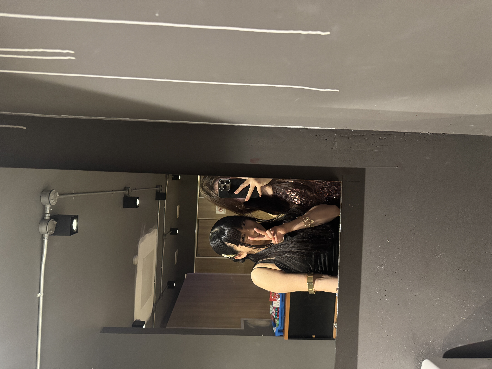

初バンコクナイトクラブにはDope＆Dirtyにタイ系チャイナちゃんと行くことに
タイ語がかなりペラペラなチャイナちゃんと知り合った。英語はあんまりそこまででもなかったから、コミュニケーションは英語と翻訳機。帽子込みの全身コーデが印象に残って、ファッションがかわいいと初対面で思った。
Dope＆Dirtyに友人が誘った、とのことで一緒に行くことにして、調べてみたら系列でかなり色々持っているSiam2nite…とかいうグループの箱で、Hip-hopがメインのとこらしい。
エカマイのあの辺はでかい箱があるのは知ってた。彼女、いい子っぽいけど統一教会の可能性が高い事を忘れられない人生の都合があるのでいやだなあ…というのもちょっとあった。
女子と2人でクラブに行くのは久しぶりだから、どんな遊びをやろうか前日から考えてわくわくしたりもした。ちょっとした賭け事とかやったら楽しいかな。とか。相手次第だけど。
賭け事とかはやんなかったし、1人でかえった。だから危ないことはなかった。安心してほしい。心配してくれた優しい人がもし万が一いてくれたなら。
男の人の理屈で物事が動いていたので、ちょっと女同士の連携とかは無理で、私はギリギリまで粘ってからふっと糸が切れた様に記憶を無くしてふっと帰ったらしい、部屋で今1人であれ？ってなっているところだ。
体がアルコール過ぎて何もわからない。10杯以上のバーボンをロックで飲んだのはわかってる。
ただ、悪いお酒が混ざっていなかったらしくて、酔い方もアルコールの抜け方もスッキリしていた。
いい人は気分のいい人なので、いい人でいるとそこら中で簡単に知り合いができて、お友達になったりする。
彼女とブランチからずっと夜明けまで一緒に遊んでいた。ローカルブランドもかなり長時間試着したりして、お互いが似合うとか似合わないとか言ってはしゃいでいた。H＆Mのセールがやっていて、彼女と私で双子コーデを買ったりした。私はあまりそういう事やらないタイプだけど（私がよく言うのは、私の女社会のポジションはプリキュアにいる紫色だ）、その気持ちがかわいかったので付き合った。彼女が凄く買うので、”やっぱり中国人はお金持ちだね！”といじっていた。おっぱいがすっごい彼女と、ぺらぺらに薄い私はなかなか似合う服が被らない気もしたけど、結構行けた。女子2人で遊ぶのはクラブの中以外だと本当にもう凄い久しぶりだった。
結局は、彼女のお友達である男性陣４人と私達２人の６人で盛り上がっていた。
彼女の印象は、マカオ周辺の出身で、上智大学に留学していたアメリカ人華人とよく似ていた。彼女の方は、今ではアメリカの南の方の州の大学で働いている。懐かしい、研究分野がポップカルチャーで、そして料理を作ってくれたのがいい想い出だった。

 ← Back to Blog
← Back to Blog